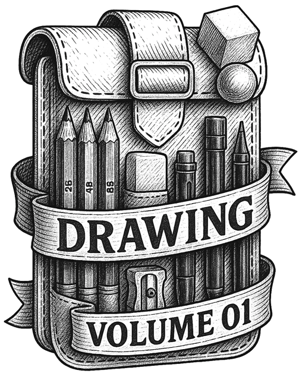

You're Ready to Begin!
Welcome to Drawing Field Kit Vol. 01. This kit is designed to teach real drawing skill through clear instruction and structured practice, no screens, no fluff, and no prior experience required.
Inside the Field Kit, students will work through foundational exercises that develop line control, visual accuracy, and basic form construction. Each lesson builds deliberately on the last, helping students move from uncertainty to confidence through repetition, clarity, and thoughtful constraints.
